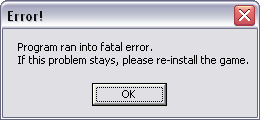

Järjestelmä : komennot
| KUVAUS |
|
Tämä komento luo keinotekoisen virheilmoituksen, jonka jälkeen ohjelma lopetetaan välittömästi. Käyttäjälle näytetään jokin kuvaava teksti, jonka ohjelmoija saa itse määrittää.  VINKKI: Käyttämällä +Chr(10)+Chr(13)+, kuten esimerkissä, saat virheilmoitukseen rivinvaihdon. |
| KÄYTTÖ | |
|
| ESIMERKKI | |
|
<<TAKAISIN